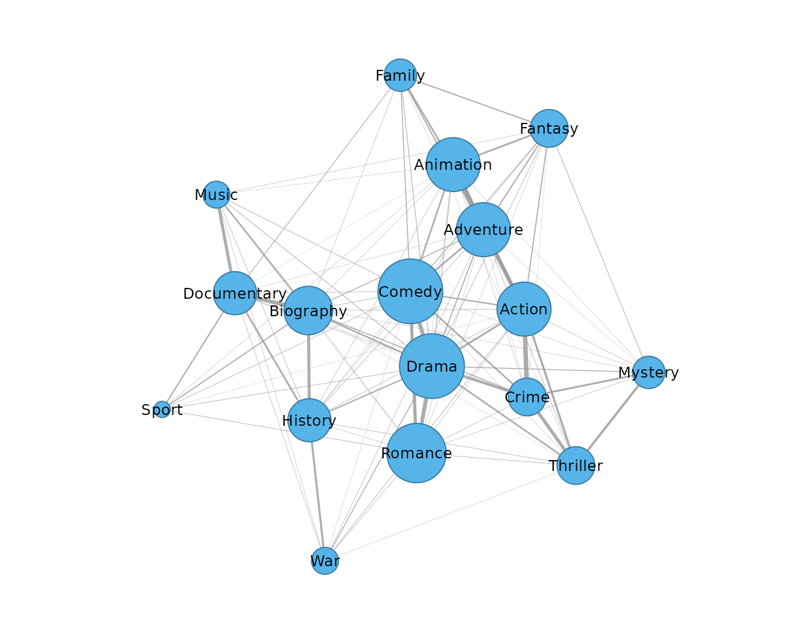
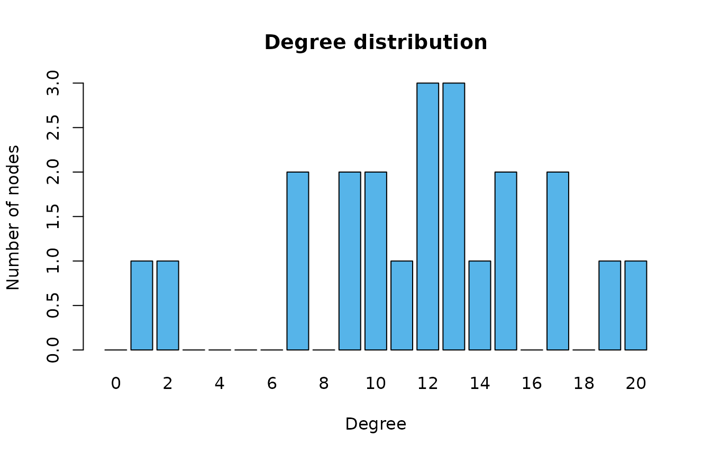

Case study: genre co-occurrence in IMDb films
Written by Mohammed Saqr and Sonsoles López-Pernas
Source:vignettes/articles/case-imdb-genres.Rmd
case-imdb-genres.RmdGenre labels are a classification that films do not respect. A film is rarely only a drama or only a comedy; it is a romantic comedy, a crime drama, an animated adventure. The combinations that recur describe the conventions of film production better than any single label does, and the way they change over time traces the history of those conventions. A co-occurrence network makes the combinations visible: each genre is a node, and two genres are linked by the films they share.
The difficulty is that raw counts of shared films are dominated by the most common genres. A genre that appears in most films co-occurs with everything, so its links say more about its frequency than about any affinity with a partner. Similarity measures correct for this by comparing the number of shared films with the number each genre would share by chance or with the size of the smaller genre (van Eck & Waltman, 2009). This case study builds the genre network of 1,000 IMDb films, asks which genres go together once frequency is taken into account, how the network is organized, and whether the combinations differ across decades and between the highest-rated films and the rest.
Data
movies is a sample of 1,000 films from the IMDb
non-commercial datasets, released between 1970 and 2024, each with an
IMDb rating of at least 7.0 and at least 1,000 votes. The roles of its
columns in this analysis are:
-
Transaction: a film, identified by
tconstand named byprimaryTitle. -
Items: the genres in
genres, separated by commas. -
Grouping variables: the release
decade, and the IMDb ratingaverageRating, from which a rating band is derived. -
Not used:
startYearandnumVotes.
head(movies)
#> tconst primaryTitle startYear genres
#> 1 tt0118117 The War at Home 1996 Drama
#> 2 tt10534996 Josep 2020 Animation,Biography,Drama
#> 3 tt4686844 The Death of Stalin 2017 Comedy,Drama,History
#> 4 tt0089957 Samaya obayatelnaya i privlekatelnaya 1985 Comedy,Romance
#> 5 tt3469964 Blind Massage 2014 Drama
#> 6 tt7647198 Love and Shukla 2017 Comedy,Drama,Romance
#> decade averageRating numVotes
#> 1 1990s 7.0 2733
#> 2 2020s 7.4 2340
#> 3 2010s 7.3 126237
#> 4 1980s 7.4 2521
#> 5 2010s 7.2 1804
#> 6 2010s 7.2 1234A film carries up to three genres. A film with a single genre contributes an item but no pair, so the number of genres per film bounds what the network can show.
with(movies, table(genres_per_film = lengths(strsplit(genres, ","))))
#> genres_per_film
#> 1 2 3
#> 231 300 469Of the 1,000 films, 231 have one genre, 300 have two and 469 have three, so 769 films contribute at least one pair.
Which genres appear together most often?
The first network uses raw counts: the weight of an edge is the number of films tagged with both genres.
raw_genres <- cooccurrence(movies, field = "genres", sep = ",")
print(raw_genres, n = 8)
#> # cooccurrence: 22 nodes, 129 edges | density: 0.5584 | mean degree: 11.7273 | 1000 transactions
#> # similarity: none | counting: full
#> # possible edges: 231 | isolates: 0
#> # top nodes: Drama(deg=20,str=812), Comedy(deg=19,str=412), Action(deg=17,str=295), Romance(deg=17,str=237), Adventure(deg=15,str=195)
#> from to weight count
#> Comedy Drama 159 159
#> Drama Romance 131 131
#> Crime Drama 91 91
#> Action Drama 71 71
#> Comedy Romance 63 63
#> Action Crime 59 59
#> Biography Drama 59 59
#> Drama Thriller 57 57
#> # ... 121 more edgesThe 22 genres form 129 pairs out of 231 possible, a density of 0.558. Drama is involved in six of the eight heaviest pairs, beginning with 159 films that are both comedy and drama and 131 that are both drama and romance. The node table shows why.
head(as.data.frame(raw_genres, what = "nodes"), 8)
#> node degree strength count_strength frequency
#> 1 Drama 20 812 812 634
#> 2 Comedy 19 412 412 278
#> 3 Action 17 295 295 155
#> 4 Romance 17 237 237 160
#> 5 Adventure 15 195 195 101
#> 6 Animation 15 149 149 75
#> 7 Documentary 14 138 138 152
#> 8 Biography 13 185 185 108Drama appears in 634 of the 1,000 films (frequency) and
is linked to 20 of the other 21 genres (degree). A genre
this common will head any list of raw counts, whatever its affinity with
its partners, so the raw network answers how often pairs occur rather
than which genres belong together.
Which genres belong together once frequency is accounted for?
The Jaccard index divides the number of shared films by the number of films that carry either genre, so a pair scores high only when the two genres rarely appear apart.
jaccard_genres <- cooccurrence(movies, field = "genres", sep = ",",
similarity = "jaccard")
print(jaccard_genres, n = 8)
#> # cooccurrence: 22 nodes, 129 edges | density: 0.5584 | mean degree: 11.7273 | 1000 transactions
#> # similarity: jaccard | counting: full
#> # possible edges: 231 | isolates: 0
#> # top nodes: Drama(deg=20,str=1.178), Comedy(deg=19,str=0.9227), Action(deg=17,str=1.07), Romance(deg=17,str=0.5551), Adventure(deg=15,str=0.9235)
#> from to weight count
#> Adventure Animation 0.285 39
#> Action Crime 0.237 59
#> Comedy Drama 0.211 159
#> Action Adventure 0.208 44
#> Biography Documentary 0.204 44
#> Drama Romance 0.198 131
#> Crime Thriller 0.175 37
#> Comedy Romance 0.168 63
#> # ... 121 more edgesThe ranking changes. Adventure and Animation lead with a Jaccard index of 0.285 although they share only 39 films, and Action and Crime come second. Comedy and Drama, the heaviest raw pair, falls to third (0.211): the two genres share many films, but each also appears in many films without the other.
Association strength goes further. It divides the shared films by the product of the two genres’ frequencies, which is proportional to the number of shared films expected if genres were assigned independently. Rare genres can reach high association from a single film, so genres in fewer than 20 films are removed first.
association_genres <- cooccurrence(movies, field = "genres", sep = ",",
similarity = "association",
min_occur = 20)
print(association_genres, n = 8)
#> # cooccurrence: 17 nodes, 102 edges | density: 0.7500 | mean degree: 12.0000 | 998 transactions
#> # similarity: association | counting: full
#> # possible edges: 136 | isolates: 0
#> # top nodes: Drama(deg=16,str=0.01308), Comedy(deg=16,str=0.01103), Romance(deg=15,str=0.006945), Animation(deg=14,str=0.01836), Adventure(deg=14,str=0.01681)
#> from to weight count
#> Adventure Animation 0.00515 39
#> History War 0.00454 9
#> Mystery Thriller 0.00381 15
#> Documentary Music 0.00354 28
#> Animation Fantasy 0.00353 9
#> Biography History 0.00343 23
#> Animation Family 0.00333 9
#> Family Fantasy 0.00327 4
#> # ... 94 more edgesFive genres fall below 20 films, leaving 17 genres and 998 films; the two films lost carried only rare genres. Drama has disappeared from the top of the list. The pairs that co-occur most above chance are Adventure and Animation, History and War, Mystery and Thriller, Documentary and Music, and Animation with Fantasy and with Family: combinations that define a kind of film, such as the animated family adventure, the war history, or the music documentary. Several of these rest on few films (History and War on 9), so their weights describe a strong tendency within a small set.
How is the genre network organized?
The Jaccard network restricted to genres in at least 20 films is drawn with cograph, with node size proportional to degree and edge width to the Jaccard index.
genre_network <- cooccurrence(movies, field = "genres", sep = ",",
similarity = "jaccard", min_occur = 20,
output = "cograph")
cograph::splot(genre_network, layout = "fr", seed = 1,
scale_nodes_by = "degree", node_fill = "#56B4E9",
edge_color = "#999999", label_size = 0.8)
In the drawing the heaviest edges are the widest, so the pairs from the Jaccard table above (Adventure and Animation, Action and Crime, Comedy and Drama) stand out against a mesh of thin edges: 17 genres share 102 of the 136 possible links.
The degree distribution of the full Jaccard network summarizes how evenly the links are spread.
plot(jaccard_genres, type = "degree")
The genres with the fewest links are at the end of the node table.
tail(as.data.frame(jaccard_genres, what = "nodes"), 5)
#> node degree strength count_strength frequency
#> 18 Horror 9 0.24344 19 11
#> 19 Sport 7 0.19799 44 28
#> 20 Musical 7 0.12197 19 12
#> 21 News 2 0.02271 2 1
#> 22 Western 1 0.00158 1 1Apart from Drama (20 links) and Comedy (19), 16 of the 22 genres are linked to between 9 and 17 of the other 21. Sport and Musical have 7 links, and only News (2) and Western (1), each tagged on a single film, are nearly isolated. The network is dense rather than organized around a few hubs, so what distinguishes one genre from another is the weight of its links, not their number.
Have genre combinations changed across decades?
split_by builds one network per decade with the same
settings. Genres in fewer than five films of a decade are removed so
that each decade’s network is not driven by single films.
decade_genres <- cooccurrence(movies, field = "genres", sep = ",",
split_by = "decade", similarity = "jaccard",
min_occur = 5)
as.data.frame(decade_genres, what = "groups")
#> group n_nodes n_edges possible_edges density weight_mean count_sum
#> 1 1970s 12 34 66 0.515 0.1334 136
#> 2 1980s 14 43 91 0.473 0.0977 164
#> 3 1990s 13 39 78 0.500 0.1126 187
#> 4 2000s 16 66 120 0.550 0.0769 335
#> 5 2010s 17 85 136 0.625 0.0666 581
#> 6 2020s 13 39 78 0.500 0.1004 184The decades differ in size, from 12 genres in the 1970s to 17 in the 2010s, the decade with the most films in the sample. The density of the network rises from 0.473 in the 1980s to 0.625 in the 2010s, so more genre combinations occur, and the mean Jaccard index falls from 0.1334 in the 1970s to 0.0666 in the 2010s, so each combination is less exclusive. The three strongest pairs of each decade show which combinations persisted.
decade_top <- cooccurrence(movies, field = "genres", sep = ",",
split_by = "decade", similarity = "jaccard",
min_occur = 5, top_n = 3)
print(decade_top, n = 18)
#> # cooccurrence: 12 nodes, 18 edges
#> # split_by: decade (6 groups)
#> # similarity: jaccard | counting: full
#> # isolates: 0 | per-group metrics: summary()
#> from to weight count group
#> Adventure Animation 0.500 7 1970s
#> Crime Thriller 0.429 6 1970s
#> Biography History 0.333 4 1970s
#> Documentary Music 0.444 4 1980s
#> Action Crime 0.233 7 1980s
#> Biography History 0.214 3 1980s
#> Adventure Animation 0.333 5 1990s
#> History War 0.333 3 1990s
#> Comedy Drama 0.298 31 1990s
#> Action Adventure 0.261 12 2000s
#> Action Crime 0.231 12 2000s
#> Comedy Drama 0.231 36 2000s
#> Action Crime 0.299 26 2010s
#> Adventure Animation 0.288 15 2010s
#> Biography Documentary 0.287 27 2010s
#> Action Adventure 0.364 8 2020s
#> Adventure Animation 0.250 4 2020s
#> Documentary Music 0.243 9 2020sAdventure and Animation is among the three strongest pairs in four of the six decades (1970s, 1990s, 2010s and 2020s), and Action and Crime in three (1980s, 2000s and 2010s). Comedy and Drama enters the top three only in the 1990s and 2000s, and Documentary and Music in the 1980s and 2020s. The animated adventure is the most stable combination in the sample.
Do the highest-rated films combine genres differently?
A rating band separates films rated 8 or higher from those rated 7 to 7.9, and one network is built per band.
rated <- transform(movies, rating_band = ifelse(averageRating >= 8,
"8 and above", "7 to 7.9"))
with(rated, table(rating_band))
#> rating_band
#> 7 to 7.9 8 and above
#> 861 139The top band holds 139 films and the lower band 861, so genres are required to appear in at least 10 films of a band.
cooccurrence(rated, field = "genres", sep = ",", split_by = "rating_band",
similarity = "jaccard", min_occur = 10, top_n = 4)
#> # cooccurrence: 10 nodes, 8 edges
#> # split_by: rating_band (2 groups)
#> # similarity: jaccard | counting: full
#> # isolates: 0 | per-group metrics: summary()
#> from to weight count group
#> Adventure Animation 0.293 36 7 to 7.9
#> Action Crime 0.248 55 7 to 7.9
#> Comedy Drama 0.213 140 7 to 7.9
#> Action Adventure 0.212 40 7 to 7.9
#> Documentary Music 0.333 10 8 and above
#> Comedy Drama 0.198 19 8 and above
#> Biography Documentary 0.167 6 8 and above
#> Comedy Romance 0.156 7 8 and aboveThe lower band repeats the pattern of the whole sample: Adventure and Animation, Action and Crime, Comedy and Drama. Among the films rated 8 or higher, Documentary and Music is the strongest pair (0.333, ten films), followed by Comedy and Drama, Biography and Documentary, and Comedy and Romance; Action and Adventure pairs do not reach the top four. The top band is small, and its strongest pairs rest on 6 to 19 films, so the difference indicates where highly rated films concentrate rather than an established contrast.
Summary
Raw counts of genre pairs reflect how common each genre is, with Drama at the top of almost every list. Normalized by the Jaccard index or by association strength, the network shows the combinations that define kinds of film: animated adventures, crime thrillers, war histories, music documentaries. The network is dense rather than clustered, its combinations became more numerous and less exclusive from the 1970s to the 2010s, and the highest-rated films lean toward documentary and biography pairs. For the choice of measure see the guide to similarity measures, and for per-group networks the guide to comparing groups. The same films are the source of the actor collaboration case study.
References
van Eck, N. J., & Waltman, L. (2009). How to normalize cooccurrence data? An analysis of some well-known similarity measures. Journal of the American Society for Information Science and Technology, 60(8), 1635–1651. https://doi.org/10.1002/asi.21075